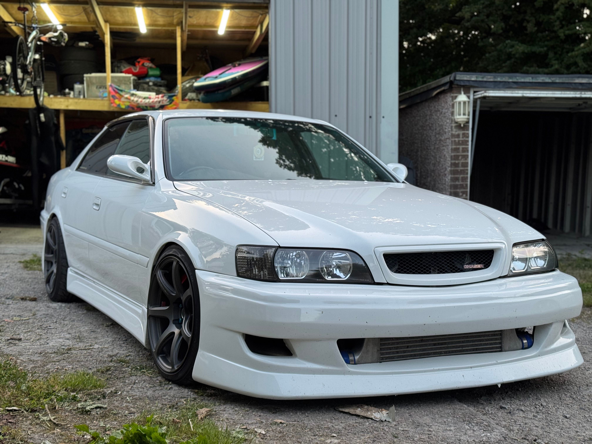
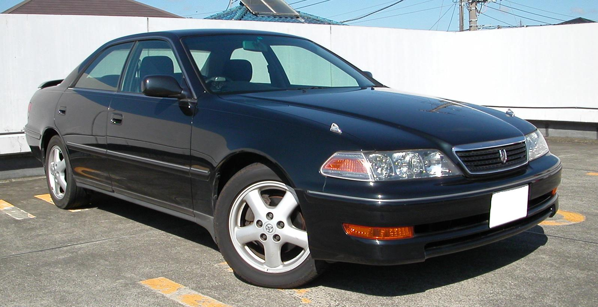
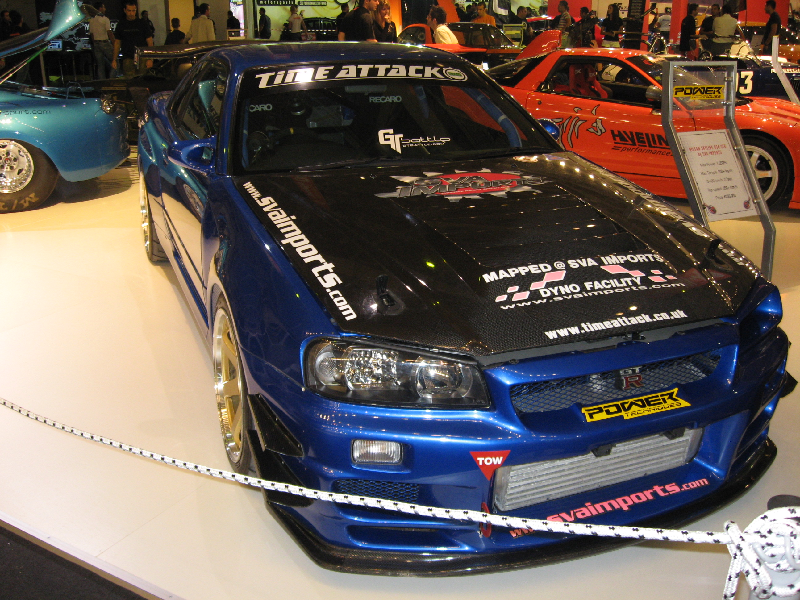
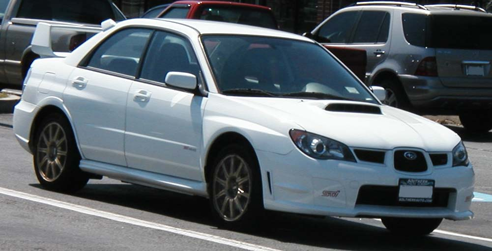
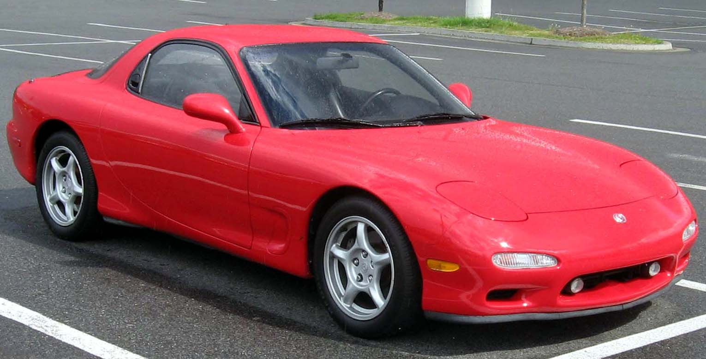

Легенды
Первая коллекция JDM Garage

Chaser JZX100
Одна из главных легенд японской автомобильной культуры 90-х.

Mark II JZX100
Культовый седан, который стал любимцем японских энтузиастов.

Silvia S15
Лёгкое заднеприводное купе, ставшее иконой тюнинга и дрифта.

Skyline R34
Один из самых узнаваемых автомобилей японской автомобильной сцены.

Impreza WRX STI
Раллийная легенда с оппозитным двигателем и полным приводом.

RX-7 FD
Лёгкое купе с легендарным роторным двигателем.